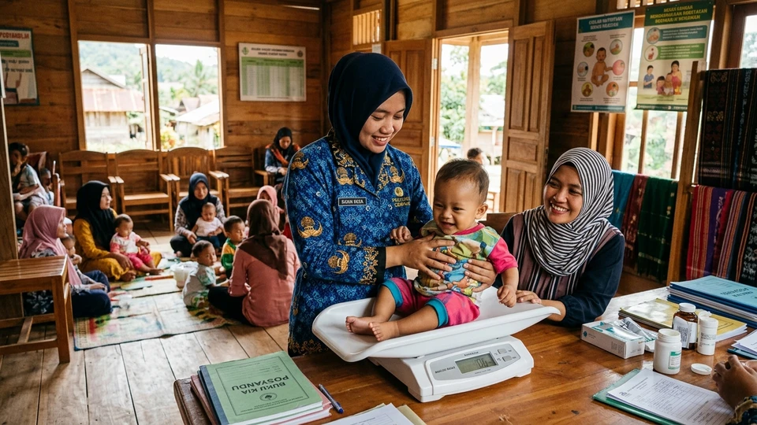
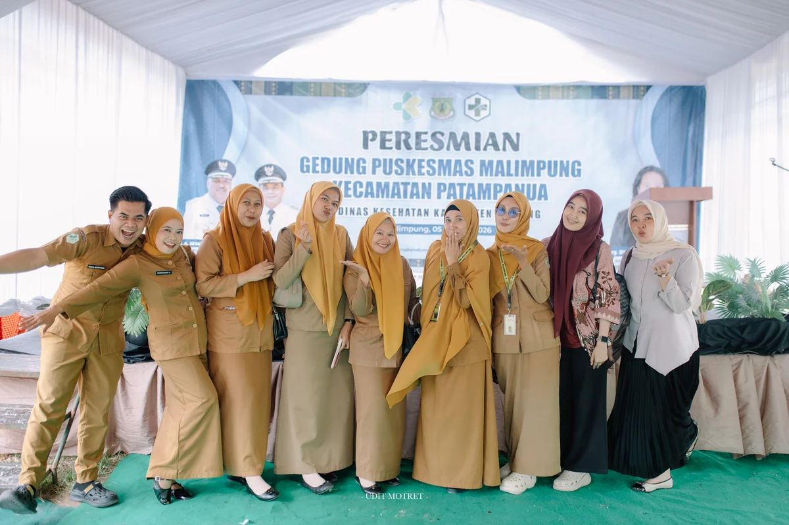
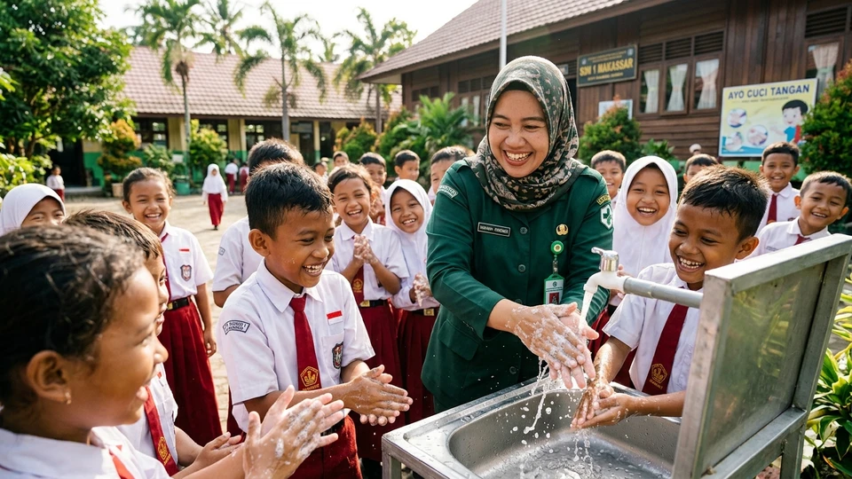
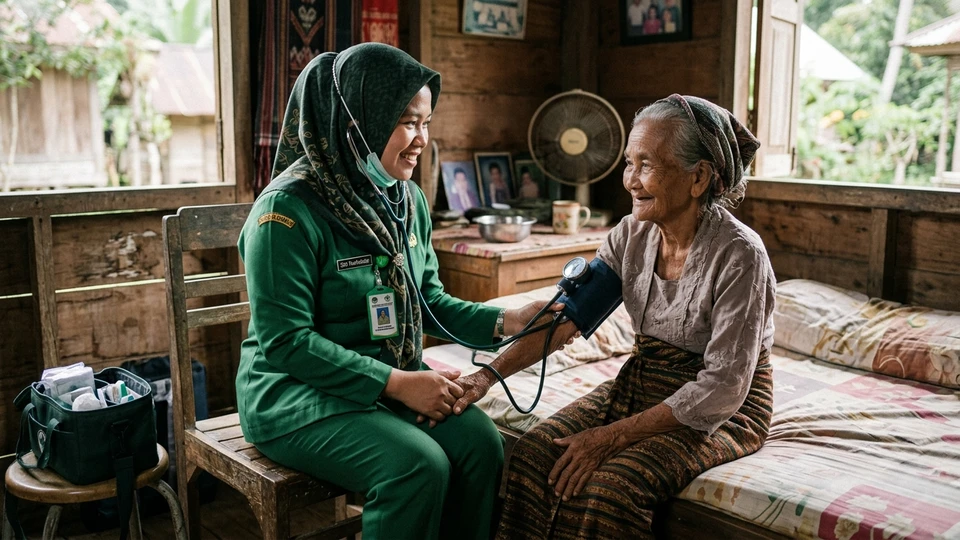
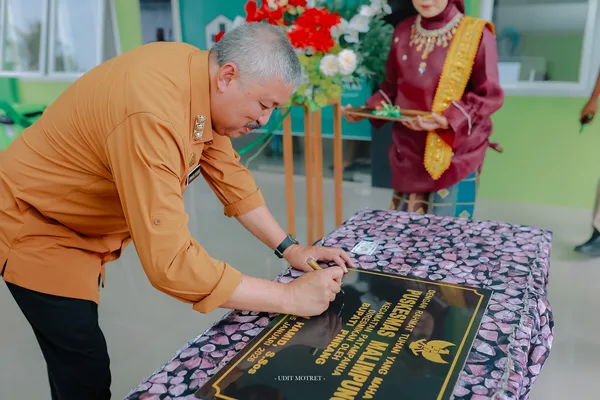

Kegiatan Fasyankes
02 Sep 2026
Memberikan pelayanan kesehatan yang bermutu, mudah diakses dan berorientasi pada kebutuhan masyarakat.

Akses langsung ke kebutuhan informasi, jadwal dokter, pendaftaran, dan layanan kesehatan harian masyarakat.
Jam operasional loket, dokter poli, dan IGD 24 Jam.
Poliklinik, lab, tindakan, dan tarif perda resmi.
Puskesmas Induk, Pustu, & Poskesdes binaan.
Saluran aduan resmi dan integrasi SP4N-LAPOR!.
Integrasi Layanan Primer dari ibu hamil, balita, remaja, produktif hingga lansia.
Pemeriksaan kesehatan berkala ulang tahun sehat (ckg.puskesmasmalimpung.id).
Maklumat pelayanan, standar mutu SKM 89.24, dan transparansi PPID.
Solusi kesehatan untuk setiap tahap kehidupan masyarakat
Integrasi Layanan Primer terpadu sesuai tata kelola 4 klaster siklus hidup dan penunjang medis resmi Puskesmas Malimpung.
Pelayanan siklus hidup terpadu bagi ibu hamil, bersalin, nifas, balita, anak usia sekolah, hingga remaja.
Skrining faktor risiko Penyakit Tidak Menular (PTM), deteksi dini hipertensi/diabetes, dan pelayanan santun geriatri lansia.
Pelayanan kuratif dan preventif poli gigi, penambalan, pencabutan, serta koordinasi rujukan lintas klaster.
Layanan gawat darurat triase cepat, instalasi farmasi (apotek), dan pemeriksaan laboratorium diagnostik terstandar.
Pemetaan batas wilayah kerja resmi Badan Informasi Geospasial (BIG) skala 1:10.000 untuk 2 Desa dan 1 Kelurahan wilayah kerja binaan.
Pusat terpadu sistem informasi kesehatan, aplikasi skrining warga, dan platform kerja aparatur fasyankes.
Platform Cek Kesehatan Gratis (CKG) hari ulang tahun warga. Skrining risiko mandiri, penjadwalan pemeriksaan fasyankes, dan rekapitulasi capaian.
Sistem rekam medis elektronik fasyankes terstandar HL7 FHIR untuk pertukaran data medis rujukan yang aman antar fasyankes.
Manajemen shift jaga IGD 24 Jam, presensi digital bergeofencing fasyankes, Surat Tanda Registrasi (STR), dan Surat Izin Praktik (SIP) dokter/bidan.
Sistem pemantauan 12 indikator Standar Pelayanan Minimal bidang kesehatan, Indeks Kepuasan Masyarakat, dan evaluasi capaian fasyankes.
Dokumentasi kegiatan pelayanan lapangan, lokakarya fasyankes, dan aksi lintas sektor.




Informasi pencegahan penyakit dan pola hidup sehat yang ditinjau oleh tenaga medis berkompeten.
Pemenuhan gizi seimbang sejak masa kehamilan hingga anak berusia dua tahun merupakan jendela emas pertumbuhan otak dan fisik optimal.
Hipertensi kerap tanpa gejala klinis khas ("the silent killer"). Deteksi rutin tensi dan pembatasan asupan natrium menjadi pilar utama pencegahan komplikasi.
Imunisasi memberikan perlindungan spesifik terhadap penyakit berbahaya. Simak jadwal imunisasi balita dan langkah penanganan demam ringan pasca imunisasi.
Cara melatih kebiasaan menyikat gigi yang tepat sejak gigi pertama tumbuh untuk mencegah gigi berlubang dan infeksi gusi pada masa kanak-kanak.
Fasilitas pelayanan kesehatan tingkat pertama di bawah Pemerintah Kabupaten Pinrang dengan komitmen mutu terakreditasi Paripurna, menghadirkan layanan promotif, preventif, kuratif, dan rehabilitatif secara terpadu.
Cari persyaratan, jadwal registrasi, prosedur alur kunjungan, dan kepastian tarif resmi sesuai Permenkes 19/2024 dan Perda Kabupaten Pinrang.
Penyelenggaraan 12 Standar Pelayanan Minimal (SPM) Kesehatan Kabupaten Pinrang dan Program Kesehatan Masyarakat di wilayah kerja Malimpung.
Meliputi pemeriksaan kehamilan standar 6 kali (2 kali dengan dokter dan USG dasar), pemantauan pertambahan berat badan balita di Posyandu, serta pemberian makanan tambahan (PMT) berbahan pangan lokal bagi balita gizi kurang dan ibu hamil KEK.
| Sasaran | Ibu hamil, ibu nifas, bayi, dan anak balita di 6 desa binaan. |
| Penanggung Jawab | Koordinator Program KIA & Gizi Puskesmas Malimpung |
| Indikator Utama | Cakupan K6 Ibu Hamil, Balita Ditimbang (D/S), Persentase Balita Stunting Tertangani. |
| Fasilitas Terkait | Poli KIA, Poli Gizi, Posyandu Siklus Hidup Desa. |
Penjaringan kesehatan berkala peserta didik SD, SMP, SMA di wilayah kerja Patampanua, pemberian Tablet Tambah Darah (TTD) bagi remaja putri guna pencegahan anemia dini, serta edukasi kesehatan reproduksi dan gizi seimbang.
| Sasaran | Siswa-siswi sekolah dasar dan menengah di wilayah Kecamatan Patampanua. |
| Penanggung Jawab | Koordinator Program UKS & Remaja Puskesmas Malimpung |
| Kegiatan Utama | Skrining berkala ketajaman mata/pendengaran, pembagian TTD mingguan di sekolah. |
| Rujukan Medis | Poli Gigi dan Poli Umum bagi siswa dengan temuan kelainan fisik. |
Sesuai Kepmenkes RI, program CKG menyasar seluruh warga yang berulang tahun untuk melakukan skrining faktor risiko kesehatan, pemeriksaan gula darah, tekanan darah, indeks massa tubuh, serta skrining lanjutan berdasarkan kelompok usia.
| Sasaran | Seluruh penduduk Indonesia yang berulang tahun (Bayi s.d. Lansia). |
| Penanggung Jawab | Tim Kerja CKG Puskesmas Malimpung |
| Persyaratan | Membawa KTP/KIA/KK untuk verifikasi NIK dan status kependudukan. |
| Tindak Lanjut | Hasil berisiko dirujuk ke pemeriksaan dokter poli atau pemeriksaan laboratorium pendukung. |
Deteksi dini hipertensi, diabetes melitus, obesitas, kanker payudara/leher rahim, serta pemantauan kemandirian fungsional lansia melalui instrumen ADL (Activities of Daily Living) dan AMT (Abbreviated Mental Test).
| Sasaran | Warga usia 15 tahun ke atas dan lanjut usia (≥60 tahun). |
| Penanggung Jawab | Koordinator Program PTM & Lansia Puskesmas Malimpung |
| Jadwal Pelaksanaan | Setiap hari kerja di Puskesmas dan jadwal Posbindu/Posyandu Lansia bulanan di desa. |
Investigasi kontak erat tuberkulosis (TB), pemantauan kepatuhan minum obat (PMO), kewaspadaan dini surveilans DBD melalui Gerakan 1 Rumah 1 Jumantik, serta pemenuhan Imunisasi Rutin Lengkap (IRL) bayi dan balita.
| Sasaran | Masyarakat rentan, kontak erat penderita TB, dan bayi usia 0–24 bulan. |
| Penanggung Jawab | Koordinator Surveilans & Pengendalian Penyakit Menular (P2P) |
| Fasilitas Terkait | Laboratorium TCM/BTA, Ruang Konseling TB, dan Pojok Imunisasi Puskesmas. |
Menyajikan gambaran kondisi kesehatan masyarakat berbasis agregat data tervalidasi. Portal ini mematuhi standar privasi data dan menolak publikasi angka estimasi tanpa penetapan resmi.
Indikator resmi diterbitkan setelah pembilang, penyebut kependudukan sah, dan periode pengamatan divalidasi oleh Dinas Kesehatan Kabupaten Pinrang.
Sumber Data: Aplikasi Internal CKG Puskesmas Malimpung & Laporan Bulanan Terpadu Puskesmas (SP3).
Prinsip Privasi: Tidak memuat NIK, nama pasien, atau koordinat rumah penduduk (UU 27/2022).
Pembaruan Terakhir: 17 September 2026 · Verifikator: Petugas Surveilans Puskesmas Malimpung.
Batas administrasi resmi 2 Desa dan 1 Kelurahan (1.246 verteks poligon resmi BIG) serta titik koordinat fasyankes induk.
Data pemantauan fasilitas jejaring tingkat desa di Kecamatan Patampanua.
Pusat pelayanan rawat jalan, IGD 24 Jam, persalinan, dan rujukan primer fasyankes induk.
Pelayanan kesehatan keluarga, imunisasi rutin balita, pemantauan stunting, dan skrining PTM.
Integrasi Layanan Primer, Posyandu siklus hidup anak hingga lansia, dan surveilans wilayah.
Sesuai dengan Undang-Undang No. 27 Tahun 2022 tentang Pelindungan Data Pribadi (UU PDP) dan Permenkes No. 24 Tahun 2022 tentang Rekam Medis, platform ini menerapkan prinsip supresi sel kecil: apabila temuan kasus skrining atau penyakit tertentu di tingkat desa berjumlah kurang dari 5 kasus (< 5 kasus), angka spesifik tidak dipublikasikan ke tingkat desa guna mencegah potensi re-identifikasi warga oleh lingkungan sekitar. Data hanya disajikan dalam bentuk agregat kumulatif tingkat kecamatan.
Pemenuhan amanat UU No. 25/2009 tentang Pelayanan Publik dan Peraturan Komisi Informasi (PerKI) No. 1/2021.
Ditetapkan berdasarkan Surat Keputusan Kepala Puskesmas Malimpung untuk menjamin kepastian persyaratan, prosedur, jangka waktu penyelesaian, dan kepastian biaya pelayanan bagi seluruh masyarakat.
Portal internal terintegrasi bagi pimpinan dan staf Puskesmas Malimpung. Akses data dibatasi ketat berdasarkan peran (Role-Based Access Control) dan seluruh aktivitas terekam dalam audit log.
Pelayanan penimbangan balita, imunisasi dasar lengkap, pemeriksaan antenatal ibu hamil, serta penyuluhan gizi seimbang dilaksanakan bersama kader kesehatan di Posyandu Melati Dusun Pajalele.
Baca Selengkapnya →Petugas Promosi Kesehatan Puskesmas Malimpung memberikan penyuluhan cuci tangan pakai sabun, konsumsi jajanan sehat di kantin sekolah, dan sikat gigi massal bersama siswa sekolah dasar binaan.
Baca Selengkapnya →Bidan desa bersama kader melakukan kunjungan langsung (home visit) untuk memantau kesehatan ibu hamil dengan faktor risiko dan memastikan kepatuhan konsumsi tablet tambah darah secara teratur.
Baca Selengkapnya →Rapat koordinasi lintas sektor bersama pihak Kecamatan Patampanua, aparat desa, Babinsa, Bhabinkamtibmas, serta PKK guna memperkuat pendampingan keluarga berisiko stunting di seluruh desa binaan.
Baca Selengkapnya →| Persyaratan Berkas | KTP/KK, Kartu BPJS/JKN (bila memiliki) |
| Persiapan Pasien | Tidak ada persiapan khusus |
| Prosedur & Alur | Pendaftaran → Pemeriksaan Awal Triage → Pelayanan Dokter → Farmasi/Tindakan |
| Estimasi Waktu | 15 – 30 Menit |
| Tarif & Biaya | Gratis bagi peserta BPJS aktif / Sesuai Perda Kab. Pinrang |
| Jadwal & Lokasi | Gedung Utama Puskesmas Malimpung (Senin – Sabtu, 08.00 – 14.00 WITA) |
| Dasar Hukum | Permenkes No. 19 Tahun 2024 tentang Penyelenggaraan Puskesmas |
| Tanggal Verifikasi | 17 September 2026 oleh Penanggung Jawab Pelayanan |